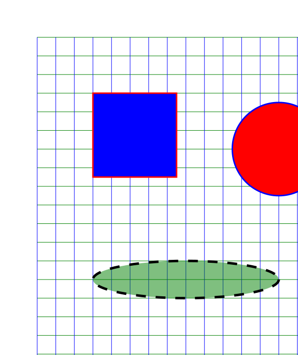

Line#
- class svgwrite.shapes.Line(start=(0, 0), end=(0, 0), **extra)#
The line element defines a line segment that starts at one point and ends at another.
- Line.__init__(start=(0, 0), end=(0, 0), **extra)#
- 参数:
start (2-tuple) – start point (x1, y1)
end (2-tuple) – end point (x2, y2)
extra – additional SVG attributes as keyword-arguments
SVG 属性#
SVG Attributes
x1 – <coordinate> – start parameter
y1 – <coordinate> – start parameter
x2 – <coordinate> – end parameter
y2 – <coordinate> – end parameter
常见 SVG 属性#
Common SVG Attributes
这些是线条、矩形、圆形、椭圆、多边形和多边形常见的 SVG 属性。
class – string
将一个或多个 CSS 类名分配给一个元素。
style – string
允许在给定元素上直接指定每个元素的 CSS 样式规则。
externalResourcesRequired – bool
False：如果即使外部资源不可用，文档渲染也能继续进行；否则为 True。
transform – 使用
svgwrite.mixins.Transform接口。
These are the common SVG Attributes for Line, Rect, Circle, Ellipse, Poliyline and Polygon.
class – string
assigns one or more css-class-names to an element
style – string
allows per-element css-style rules to be specified directly on a given element
externalResourcesRequired – bool
False: if document rendering can proceed even if external resources are unavailable else: True
transform – use
svgwrite.mixins.Transforminterface
常见标准 SVG 属性#
Common Standard SVG Attributes
这些是线、矩形、圆、椭圆、多段线和多边形的常见标准 SVG 属性。
These are the common Standard SVG Attributes for Line, Rect, Circle, Ellipse, Poliyline and Polygon.
父类#
Parent Classes
Rect#
- class svgwrite.shapes.Rect(insert=(0, 0), size=(1, 1), rx=None, ry=None, **extra)#
The rect element defines a rectangle which is axis-aligned with the current user coordinate system. Rounded rectangles can be achieved by setting appropriate values for attributes rx and ry.
- Rect.__init__(insert=(0, 0), size=(1, 1), rx=None, ry=None, **extra)#
- 参数:
insert (2-tuple) – insert point (x, y), left-upper point
size (2-tuple) – (width, height)
rx (<length>) – corner x-radius
ry (<length>) – corner y-radius
extra – additional SVG attributes as keyword-arguments
SVG 属性#
SVG Attributes
x – <coordinate> – 插入 参数
矩形的那一侧的 x 轴坐标，具有较小的 x 轴坐标值
y – <coordinate> – 插入 参数
矩形的那一侧的 y 轴坐标，具有较小的 y 轴坐标值
width – <length> – 大小 参数
height – <length> – 大小 参数
rx – <length> – rx 参数
对于圆角矩形，用于圆化矩形角落的椭圆的 y 轴半径。
ry – <length> – ry 参数
对于圆角矩形，用于圆化矩形角落的椭圆的 y 轴半径。
x – <coordinate> – insert parameter
The x-axis coordinate of the side of the rectangle which has the smaller x-axis coordinate value
y – <coordinate> – insert parameter
The y-axis coordinate of the side of the rectangle which has the smaller y-axis coordinate value
width – <length> – size parameter
height – <length> – size parameter
rx – <length> – rx parameter
For rounded rectangles, the y-axis radius of the ellipse used to round off the corners of the rectangle.
ry – <length> – ry parameter
For rounded rectangles, the y-axis radius of the ellipse used to round off the corners of the rectangle.
父类#
Parent Classes
Circle#
- class svgwrite.shapes.Circle(center=(0, 0), r=1, **extra)#
The circle element defines a circle based on a center point and a radius.
- Circle.__init__(center=(0, 0), r=1, **extra)#
- 参数:
center (2-tuple) – circle center point (cx, cy)
r (length) – circle-radius r
extra – additional SVG attributes as keyword-arguments
SVG 属性#
SVG Attributes
cx – <coordinate> – 中心 参数
圆心的 x 轴坐标。
cy – <coordinate> – 中心 参数
圆心的 y 轴坐标。
r – <length> – r 参数
圆的半径。
cx – <coordinate> – center parameter
The x-axis coordinate of the center of the circle.
cy – <coordinate> – center parameter
The y-axis coordinate of the center of the circle.
r – <length> – r parameter
The radius of the circle.
父类#
Parent Classes
Ellipse#
- class svgwrite.shapes.Ellipse(center=(0, 0), r=(1, 1), **extra)#
The ellipse element defines an ellipse which is axis-aligned with the current user coordinate system based on a center point and two radii.
- Ellipse.__init__(center=(0, 0), r=(1, 1), **extra)#
- 参数:
center (2-tuple) – ellipse center point (cx, cy)
r (2-tuple) – ellipse radii (rx, ry)
extra – additional SVG attributes as keyword-arguments
SVG 属性#
SVG Attributes
cx – <coordinate> – 中心 参数
椭圆的圆心的 x 轴坐标。
cy – <coordinate> – 中心 参数
椭圆的圆心的 y 轴坐标。
rx – <length> – r 参数
椭圆的 x 轴半径。
ry – <length> – r 参数
椭圆的 y 轴半径。
cx – <coordinate> – center parameter
The x-axis coordinate of the center of the ellipse.
cy – <coordinate> – center parameter
The y-axis coordinate of the center of the ellipse.
rx – <length> – r parameter
The x-axis radius of the ellipse.
ry – <length> – r parameter
The y-axis radius of the ellipse.
父类#
Parent Classes
Polyline#
- class svgwrite.shapes.Polyline(points=[], **extra)#
The polyline element defines a set of connected straight line segments. Typically, polyline elements define open shapes.
- Polyline.__init__(points=[], **extra)#
- 参数:
points (iterable) – iterable of points (points are 2-tuples)
extra – additional SVG attributes as keyword-arguments
属性#
Attributes
- Polyline.points#
点的 list，一个点是一个 2-tuple (x, y): x, y = <number>
list of points, a point is a 2-tuple (x, y): x, y = <number>
SVG 属性#
SVG Attributes
points – list of points – points 参数
构成折线的点。所有坐标值都在 用户坐标系统 中（不允许使用单位）。
如何追加点:
Polyline.points.append( point )
Polyline.points.extend( [point1, point2, point3, ...] )
points – list of points – points parameter
The points that make up the polyline. All coordinate values are in the user coordinate system (no units allowed).
How to append points:
Polyline.points.append( point )
Polyline.points.extend( [point1, point2, point3, ...] )
父类#
Parent Classes
Polygon#
- class svgwrite.shapes.Polygon(points=[], **extra)#
The polygon element defines a closed shape consisting of a set of connected straight line segments.
Same as
Polylinebut closed.
父类#
Parent Classes
Basic Shapes Examples#
import svgwrite
from svgwrite import cm, mm
def basic_shapes(name):
dwg = svgwrite.Drawing(filename=name, debug=True)
hlines = dwg.add(dwg.g(id='hlines', stroke='green'))
for y in range(20):
hlines.add(dwg.line(start=(2*cm, (2+y)*cm), end=(18*cm, (2+y)*cm)))
vlines = dwg.add(dwg.g(id='vline', stroke='blue'))
for x in range(17):
vlines.add(dwg.line(start=((2+x)*cm, 2*cm), end=((2+x)*cm, 21*cm)))
shapes = dwg.add(dwg.g(id='shapes', fill='red'))
# set presentation attributes at object creation as SVG-Attributes
circle = dwg.circle(center=(15*cm, 8*cm), r='2.5cm', stroke='blue', stroke_width=3)
circle['class'] = 'class1 class2'
shapes.add(circle)
# override the 'fill' attribute of the parent group 'shapes'
shapes.add(dwg.rect(insert=(5*cm, 5*cm), size=(45*mm, 45*mm),
fill='blue', stroke='red', stroke_width=3))
# or set presentation attributes by helper functions of the Presentation-Mixin
ellipse = shapes.add(dwg.ellipse(center=(10*cm, 15*cm), r=('5cm', '10mm')))
ellipse.fill('green', opacity=0.5).stroke('black', width=5).dasharray([20, 20])
dwg.save()
if __name__ == '__main__':
basic_shapes('basic_shapes.svg')
basic_shapes.svg#
{kind=link}
